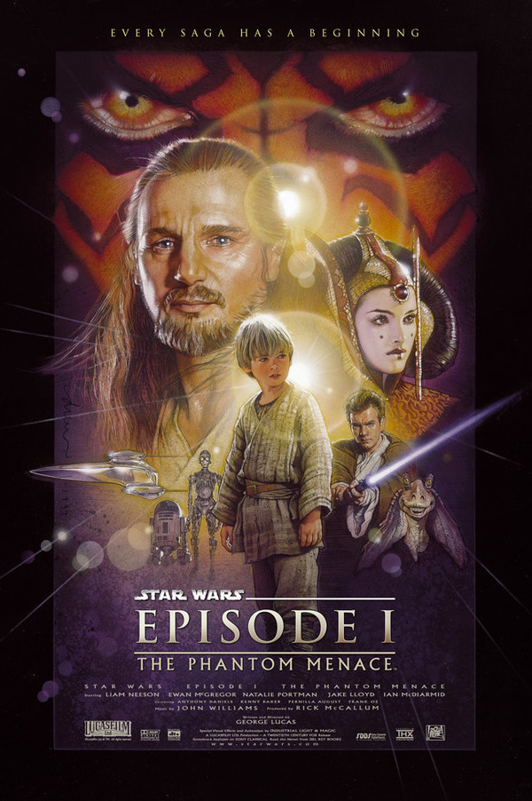
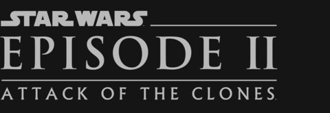
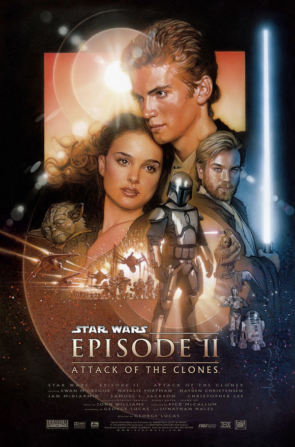
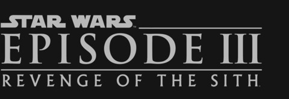
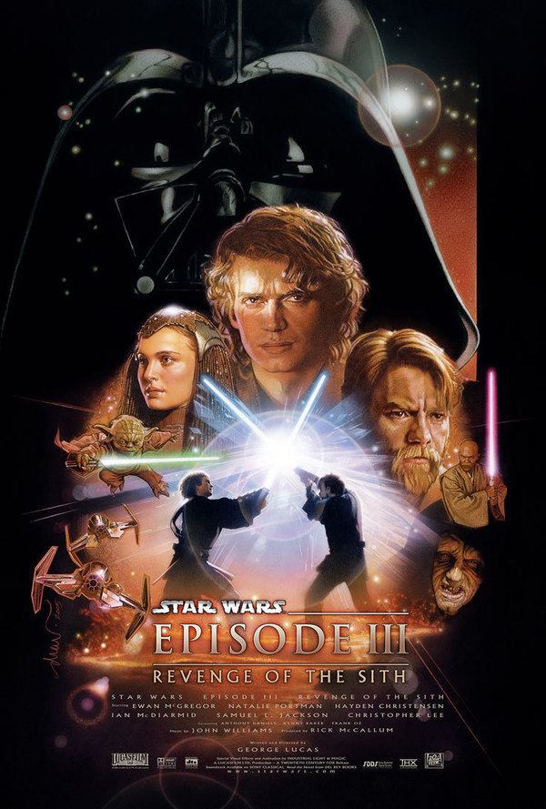
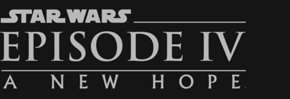
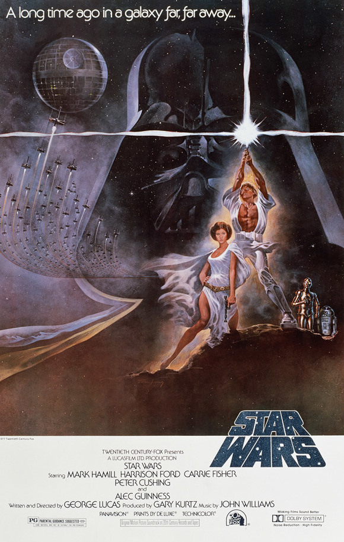
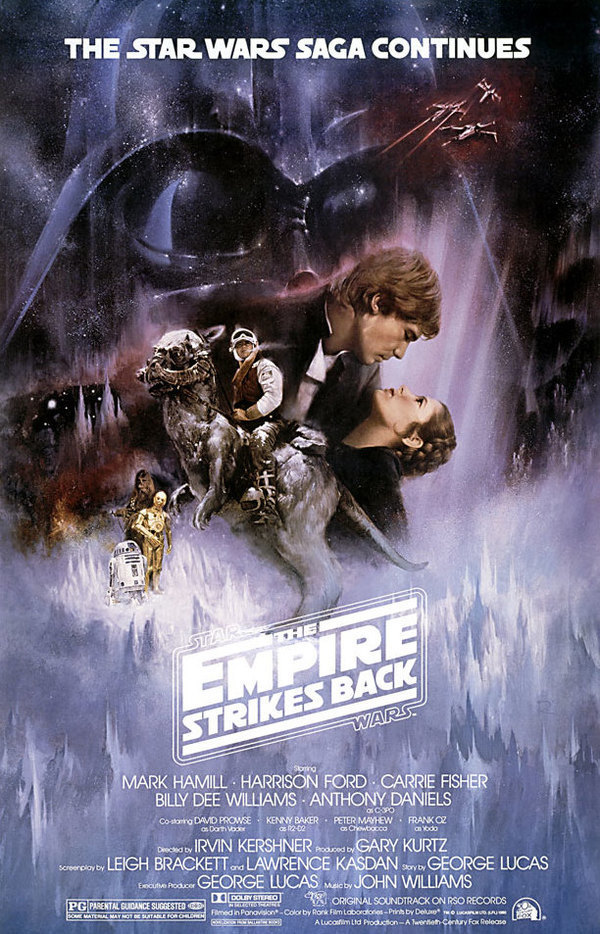

Star Wars
Episode 1 - The Phantom Menace

Stranded on the desert planet Tatooine after rescuing young Queen Amidala from the impending invasion of Naboo, Jedi apprentice Obi-Wan Kenobi and his Jedi Master Qui-Gon Jinn discover nine-year-old Anakin Skywalker, a young slave unusually strong in the Force. Anakin wins a thrilling Podrace and with it his freedom as he leaves his home to be trained as a Jedi. The heroes return to Naboo where Anakin and the Queen face massive invasion forces while the two Jedi contend with a deadly foe named Darth Maul. Only then do they realize the invasion is merely the first step in a sinister scheme by the re-emergent forces of darkness known as the Sith.

Episode 2 - Attack Of The Clones

Ten years after the invasion of Naboo, the galaxy is on the brink of civil war. Under the leadership of a renegade Jedi named Count Dooku, thousands of solar systems threaten to break away from the Galactic Republic. When an assassination attempt is made on Senator Padmé Amidala, the former Queen of Naboo, twenty-year-old Jedi apprentice Anakin Skywalker is assigned to protect her. In the course of his mission, Anakin discovers his love for Padmé as well as his own darker side. Soon, Anakin, Padmé, and Obi-Wan Kenobi are drawn into the heart of the Separatist movement and the beginning of the Clone Wars.

Episode 3 - Revenge Of The Sith

Years after the onset of the Clone Wars, the noble Jedi Knights lead a massive clone army into a galaxy-wide battle against the Separatists. When the sinister Sith unveil a thousand-year-old plot to rule the galaxy, the Republic crumbles and from its ashes rises the evil Galactic Empire. Jedi hero Anakin Skywalker is seduced by the dark side of the Force to become the Emperor's new apprentice -- Darth Vader. The Jedi are decimated, as Obi-Wan Kenobi and Jedi Master Yoda are forced into hiding. The only hope for the galaxy are Anakin's own offspring -- the twin children born in secrecy who will grow up to become heroes.

Episode 4 - A New Hope

Nineteen years after the formation of the Empire, Luke Skywalker is thrust into the struggle of the Rebel Alliance when he meets Obi-Wan Kenobi, who has lived for years in seclusion on the desert planet of Tatooine. Obi-Wan begins Luke's Jedi training as Luke joins him on a daring mission to rescue the beautiful Rebel leader Princess Leia from the clutches of the evil Empire. Although Obi-Wan sacrifices himself in a lightsaber duel with Darth Vader, his former apprentice, Luke proves that the Force is with him by destroying the Empire's dreaded Death Star.

Episode 5 - The Empire Strikes Back

Perebutan pembukaan sekuel tersebut masing-masing menyatakan bahawa mereka telah bernombor sebagai "Episode V" dan "Episode VI", walaupun filem umumnya diiklankan semata-mata di bawah sarikata mereka. Walaupun filem pertama dalam siri itu hanya bertajuk Star Wars, dengan pengumuman semula 1981, ia mempunyai subtitle Episod IV: A New Hope ditambah untuk terus konsisten dengan sekuelnya, dan untuk menubuhkannya sebagai bab tengah saga yang berterusan. Plot pusat trilogi asal pada Perang Saudara Galactic Perjuangan Pemberontak cuba membebaskan galaksi dari cengkeraman Empayar Galactic, serta usaha Luke Skywalker untuk menjadi Jedi.